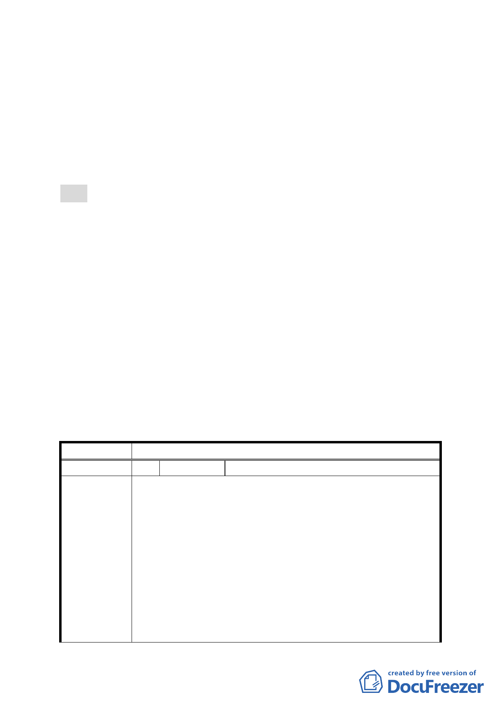

圍外南側機關用地，軍方皆仍有使用需求，是否請軍方
再釋出更多土地，應留待日後再予檢討評估並與軍方持
續協商，納入後續地區都市計畫檢討評估。
九、 公民或團體所提意見：計51件。
十、 申請單位：臺北市政府。
十一、 法令依據：都市計畫法第27條第1項第4款。
決議：
一、市府本次會議所送修正計畫書內容已依專案小組審查意見修
正，且補充資料亦已說明市府協調結果及處理方式，本案除
以下各點修正外，其餘依市府本次會議所送資料通過。
（一）本案計畫名稱修正為「變更臺北市文山區辛亥國、高中用
地及住宅區為防洪調節池用地、機關用地、公園用地、道
路用地、排水溝用地及保護區主要計畫案」
（二）財政部國有財產局來函表示本案國產局管有之國有土地面
積為 1,535.66 平方公尺，與計畫書第 9 頁表 2 所載 0.128
公頃不符，請市府查明更正。
二、公民或團體所提意見審決如綜理表。
臺北市都市計畫委員會公民或團體所提意見綜理表
案 名 變更臺北市辛亥國、高中用地主要計畫案
編 號 1 陳情人 詹德勝等 11 人
主旨：反對都市發展局之臺北市文山區公訓段2小段72、73、
77-1及82地號等，辛亥高中預定地都市計畫變更案公
展之規劃。
說明：
質疑：
陳 情 理 由 1. 引君入甕，坑殺百姓：辛亥高中預定地從77年起實施徵
收，該區土地則為學校機關用地確定無疑，在77-79年的
20年間土地登記項目一直都是學校用地，民眾的移轉均
以此為依據，今遽然大筆一揮，除原軍方用地外，其他
一夕間成為保護區、公園、道路，尤其是作為保護區部
分的土地，對民眾而言，簡直是憑空蒸發。政府對這20
- 12 -